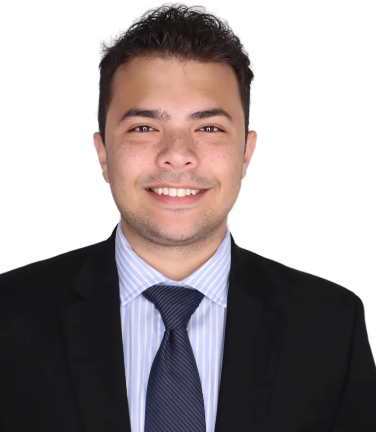
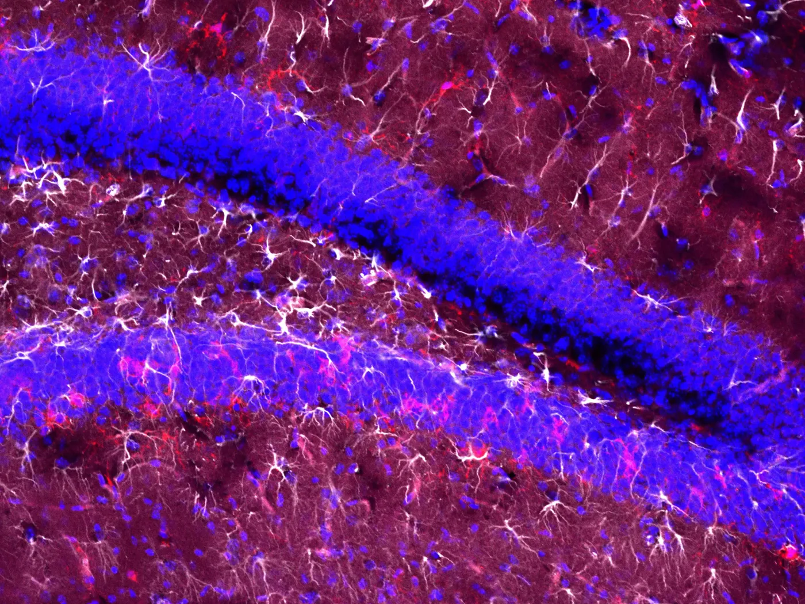

Effect of race on health outcomes in adults hospitalized with COVID-19
Johns Hopkins School of Medicine · Dr. Henry Michtalik · Research Assistant
- Systematic review of US-based adult patients hospitalized with COVID-19
Neuroscience and Biotechnology

Neuroscience student at Stony Brook, working on manipulating cerebrospinal fluid flow and its impact on adult neurogenesis
I'm a research assistant in Dr. Shaoyu Ge's lab, where I study new neurons in the dentate gyrus. I also work with BESAFE, where we study the impact of medicine quality on maternal, infant, and child health in low- and middle-income countries across Africa. Outside the lab I design medical devices at hackathons, mentor BME student projects, and lead Oncology Society Inc.
M.S. Neuroscience
Stony Brook University
B.S. Biology
Stony Brook University
Honors College, Dean's List (2 semesters)
St. John's University · freshman year completed
Clinical Medical Assistant Course
Adelphi University
Neuroscience, neurosurgery, and public health
Stony Brook University · Dr. Shaoyu Ge
Johns Hopkins Bloomberg School of Public Health · Dr. Saifuddin Ahmed
Johns Hopkins School of Medicine · Dr. Henry Michtalik · Research Assistant
Stony Brook Medicine, Pharmacology · Dr. Dongyan Tan · Student Researcher
In Stony Brook's Pharmacology Department, I conducted basic science research under Dr. Tan. My project involved cloning and purifying the chromatin remodeler CHD1. Chromatin remodelers regulate gene expression by sliding a nucleosome to a different position. Our lab has found a connection between the impeded movement of the chromatin remodeler INO80 and nucleosomes containing the histone variant macroH2A. Irregular concentrations of macroH2A are associated with carcinogenesis in melanoma, lung, bladder, and breast cancers, due to its role in suppressing cancer-promoting genes. Understanding the connection between CHD1 and INO80 can help us understand the mechanism of cancer development and aid in the development of oncological treatments.
Lenox Hill Hospital, Neurosurgery · Dr. Randy D'Amico · Research Assistant
Papers, posters, hackathons, and exhibited work
Hackathon
Asclepius: Robotic Surgical Trainer
Persaud C, Li M.
HackPrinceton, Princeton University
Poster
Nearly one in five essential medicines fail quality standards in Africa: a systematic review and meta-analysis of MNCH medicines and antimalarials
Rusatira JC, Novoa MD, Uwimana JB, Persaud C, Pal E, et al.
MACUB 2026, Seton Hall University, New Jersey
Journal article
Nearly one in five essential medicines fail quality standards in Africa: a systematic review and meta-analysis of MNCH medicines and antimalarials
Rusatira JC, Novoa MD, Uwimana JB, Persaud C, Pal E, et al.
PLOS Global Public Health 6(9): e0006326 · doi:10.1371/journal.pgph.0006326
Exhibition
The Creation of Memories
Persaud C.
2026 Beauty in Life Show, Khôra Gallery, Stony Brook University
Hackathon
MindPiece Initiative
Persaud C, Li M, Zheng E.
Mission:Brain Global Neurosurgery Hackathon, online · Organizer's Choice Award
Hackathon
Wolfie Run: Rehabilitation for Occipital Infarction Patients
Persaud C, Li M, Gao C, Leung J, Zheng E.
3rd Annual Healthcare Innovation Challenge, Stony Brook University
Journal article
Optimizing post-acute care inpatient rehabilitation for patients with brain metastasis: a systematic review of functional outcomes
Donnelly BM, Stark KG, Persaud CJ, D'Amico RS, Davidoff CI.
Supportive Care in Cancer 33(5):418 · doi:10.1007/s00520-025-09468-9 · PMID 40278896
Poster
Enhancing Rehabilitation Outcomes in Brain Metastases Patients: A Review of Challenges, Current Practices, and Future Directions
Donnelly B, Stark K, Persaud C, D'Amico R, Davidoff C.
CNS 2024, Houston, Texas
Medical devices and health initiatives designed under hackathon deadlines
Robotic surgical trainer
With M. Li · Princeton University
A 3D-printed surgical robot console simulator.
Visit asclepius.nycA global health initiative addressing traumatic brain injury in low-income countries, chosen from 99 teams.
With M. Li and E. Zheng
Rehabilitation for occipital infarction patients.
With M. Li, C. Gao, J. Leung, and E. Zheng
Organizer's Choice AwardMission:Brain Global Neurosurgery Hackathon, among 99 teams
CSTEP Research AwardGiven to the top 0.2% of CSTEP students for scientific research
Internship Equity Fund, Finalist and RecipientStony Brook University's competitive fund for students in internships and research
Upstander AwardCenter for Prevention and Outreach, for Green Dot, QPR, Red Watch Band, Narcan, and CPR training
Civically Engaged Seawolf AwardStony Brook University
Outstanding Leadership and Service PinNational Residence Hall Honorary, the chapter's highest individual honor
Silver Leaf AwardNational Residence Hall Honorary, presented by the Regional Director
Clinical research and training at Stony Brook, Johns Hopkins, and Lenox Hill
Stony Brook Medicine · Academic Associates · Dr. Brian McMahon
This competitive fellowship provides undergraduates with clinical experience through patient interaction in the Emergency Department at Stony Brook Medicine. Responsibilities for this role include screening bed charts for eligible candidates, obtaining patients' consent for our ongoing research projects, and assisting with manuscript writing.
Johns Hopkins School of Medicine · Dr. Henry Michtalik
The Summer Hospitalist Academic Research Program (SHARP) is a 10-week clinical research program designed for undergraduate students planning a career in medicine. During this position, I conducted research on the effect of race on health outcomes in US-based adult patients hospitalized with COVID-19 with Dr. Henry Michtalik. I shadowed hospitalists during rounds, triage, and procedures (e.g., paracentesis, lumbar puncture, Dobhoff nasogastric (NG) tube placement).
Stony Brook Medicine Emergency Department · Dr. Robert M. Nocito
The Pathways to Healthcare program bridges undergraduate students from diverse backgrounds into the medical field. Skills that I developed during this program included learning first aid, becoming HIPAA-trained, participating in medical training in cadaver labs, developing suturing and cast treatment skills, and working with case studies, research, and preparing presentations. By offering a unique opportunity to explore various healthcare fields, gain hands-on clinical experience, and build lasting relationships with mentors, we are empowering the next generation of healthcare professionals to dream bigger, reach further, and ultimately transform the future of healthcare. Participants not only develop critical skills and insights but also gain a competitive edge when applying to medical and health-related graduate programs.
Lenox Hill Hospital, Neurosurgery
Building communities that get students into research
New York City · chapters at Stony Brook and Princeton
I oversee operations, membership, and events, and grew the society by founding university chapters. It began as the Oncology Society at Stony Brook, which I founded and led as president from Sep 2024 to May 2026, connecting students with research resources and teaching lab techniques.
Stony Brook University · volunteer
CSTEP, Stony Brook University
The Collegiate Science and Technology Entry Program (CSTEP) is a program funded by the New York State Education Department to increase the number of economically disadvantaged students and others pursuing professional licensure and careers in mathematics, science, technology, and health-related fields. My role within CSTEP is serving as the instructor for the AP- and Regents-level chemistry preparatory courses for students in the high school sister program, STEP. During the time reserved for test preparation, I teach students key general chemistry topics and test-taking strategies.
National Residence Hall Honorary, Stony Brook
Member of the Society for Neuroscience, the American Society for Biochemistry and Molecular Biology, and the Gerontological Society of America.

Shown in the 2026 Beauty in Life Show at Khôra Gallery, Stony Brook University.
Curriculum vitaeEverything on this page, plus certificates, memberships, and digital media work.
Open CV (PDF)